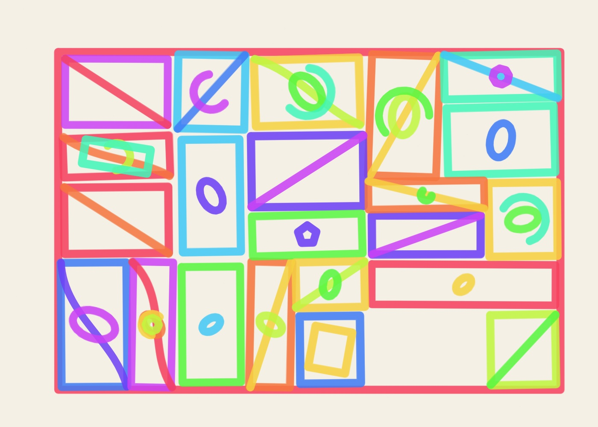
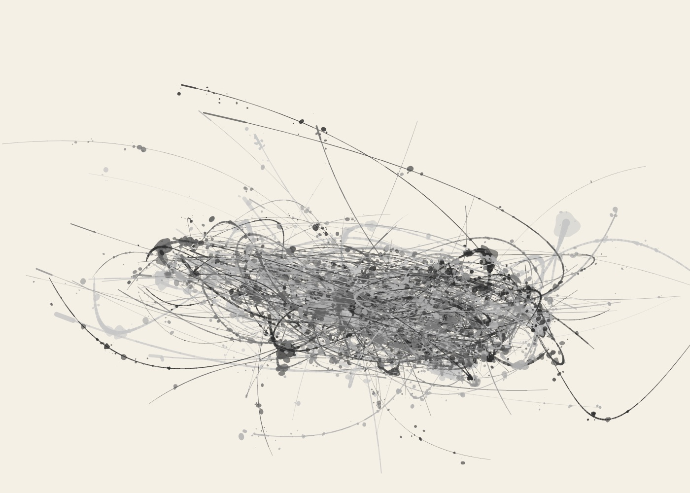

ABOUT THIS PROJECT
Previously presented as ALGO/ART. The artwork, archive and original links remain the same.
PROPORTION PIECE began with a question: how much of a drawing could be organised by a single proportion before it started to feel too orderly?
The number is φ, approximately 1.618. It turns up in the divisions, distances and directions of these compositions. Sometimes it is obvious. Elsewhere it is buried beneath a tangle of lines, a patch of colour or an expanse of untouched paper.
The canvas is 1400 × 1000 pixels (or 1000 × 1400 in portrait), not a golden rectangle: φ governs the relationships within the drawing rather than the shape of the page.

There are eight ways of arranging the marks: Orbital Studies, Golden Trajectories, Recursive Divisions, Radiant Systems, Connected Fields, Growth Systems, Constructed Forms and Automatic Marks. Each takes a different route through the same problem. The golden angle, about 137.5°, is useful for some of them; others rely more heavily on division, scale or placement.
The geometry is only part of the drawing. The renderer then gives it a material. Marker leaves uneven lines and dry patches. Tissue and graphite build up translucent layers and pencil grain. Watercolour spreads into paper. Oil paint gathers into heavier strokes. Action painting scatters and pours the marks across the surface.

The drawings are made by seeded JavaScript code in the browser. They aren't produced by an AI image generator. A seed gives the machine a starting point, and the controls let you change the composition without losing the ability to return to it. The same settings and renderer version can reproduce a saved drawing.
See a drawing made mark by mark →
You can see some of the structure using Show the φ, or read the settings in Describe. The editor also offers Four at once to compare four drawings, and lets you export PNG or SVG files, including paths intended for pen plotters. Physical plotter compatibility varies by machine.
The daily gallery keeps a record of what the machine makes. For the code and the longer account of its development, there is the repository and its development diary.
What interests me is the space between the measured structure and the marks on the page. The proportions can be exact; the drawing needn't look that way.
FOLLOW THE DRAWINGS
The daily gallery is generated automatically by the drawing machine, not submitted by visitors. New pieces are created from code each day and shared on Instagram, Threads and Bluesky. Drawings you make in the editor remain yours; they are not added to the daily gallery.
Try the drawing machine ↗ Browse the gallery ↗ See how a drawing is made ↗